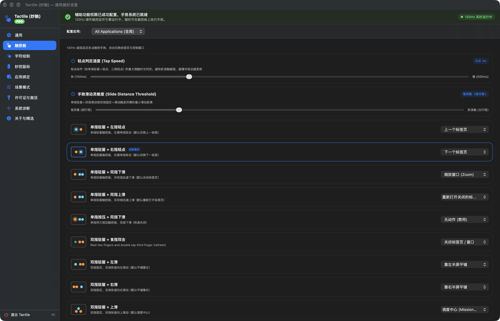
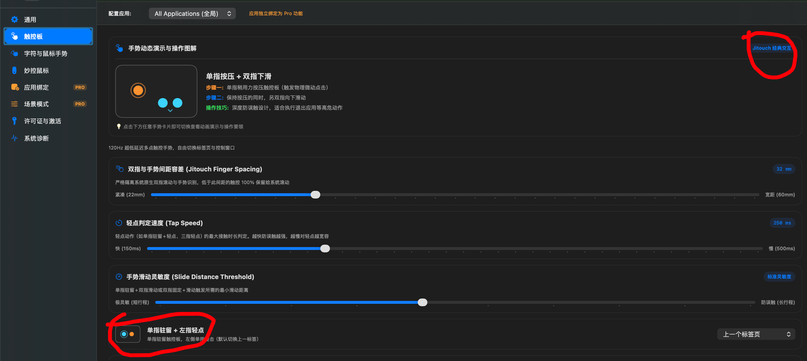
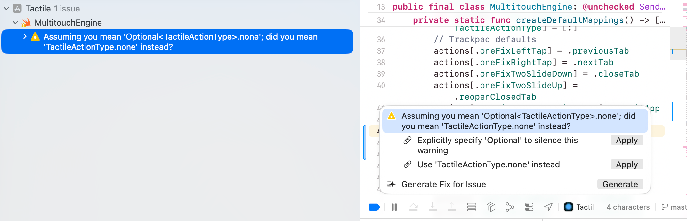
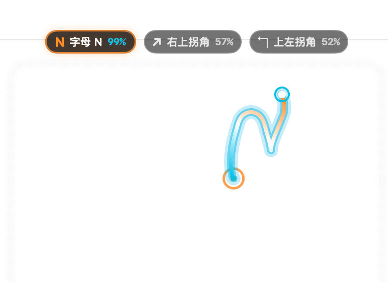

重塑 Mac 触控板与妙控鼠标体验
120Hz ProMotion 极轻量手势神器
专为 MacBook 触控板 (Trackpad)、Magic Trackpad 与 Magic Mouse 深度打造。独创 120Hz 零堆分配触控引擎，支持字符手势绘制、单指驻留滑动、Magic Mouse 物理中键与现代窗口吸附。内存常驻 < 15MB，零后台电量消耗，BetterTouchTool (BTT) 与 Jitouch 极速轻量替代首选。
卓越架构，带来前所未有的操控体验
告别异响、粘滞与双管道跳页，纯 Swift 6 与底层 C 桥接打造的洁净室多点引擎
120Hz 零堆分配热路径
栈上分配触控帧缓冲，微秒级注入 `kCGHIDEventTap`，内存常驻 < 20MB，彻底根治触控板频繁异响与连击跳页顽疾。
字符绘制与直线度防误判
划出 T、W、B、F、Q 或方向箭头即刻秒级触发，HUD 实时呈现整数置信度与最优动作，独创直线度过滤杜绝误判。
妙控鼠标 Pro 全表面手势
中指固定食指轻点秒切标签，滑动关闭，三指向上调度中心，表面中央模拟原生中键点击，榨干 Magic Mouse 潜能。
智能极速省电模式
屏幕休眠瞬间自动挂起硬件监听，闲置零 CPU 消耗；设置窗口采用按需事件监听与 Metal GPU 加速，彻底杜绝耗电。
场景模式与分应用绑定
内置日常、办公、开发、影音 4 大预设，支持保存自定义场景快照。可为 Safari、Xcode、Chrome 定制独占映射。
原生窗口快捷平铺
双指固定一指向左右滑动即可平铺半屏，向上全屏最大化，向下还原居中，无需安装任何额外窗口管理辅助工具。
精致优雅的 Liquid Glass 原生界面
深度融入 macOS 毛玻璃视觉规范，极致直观的触控调节与多语言支持




即刻下载 Tactile，开启全新触控体验
所有基础手势与字符绘制永久免费，下载解压即可运行 · 提供 Homebrew 一键安装与官网 / 镜像直链
Tactile-Universal.zip
通用双架构二进制安装包，推荐所有 Mac 用户下载使用。
Tactile-AppleSilicon.zip
原生 arm64 架构优化包，适配 M1/M2/M3/M4 全系 Mac。
Tactile-Intel.zip
原生 x86_64 架构优化包，适配 Intel 芯片 MacBook 及 iMac。
常见搜索问题 · 深度手势指南
专为 Mac 触控板与妙控鼠标用户打造的高频疑问解答 (FAQ)
Q1: 为什么 Tactile 是 BetterTouchTool (BTT) 的最佳替代品？
BetterTouchTool (BTT) 功能繁多但常驻内存高达 200MB~500MB，且长时间运行容易发热卡顿。Tactile 采用现代纯 Swift 6 与底层驱动级 C 桥接编写，内存常驻仅 < 15MB，后台闲置 CPU 占用严格为 0.0%，并独创 120Hz ProMotion 零延迟防抖算法，既轻量又丝滑。
Q2: 支持哪些 Mac 触控板 (Trackpad) 与鼠标硬件？
全面完美支持：搭载 Force Touch 的全系 MacBook Air / MacBook Pro 内置触控板、外接 Magic Trackpad 2 & 3 (妙控板)，以及 Magic Mouse 1 & 2 (妙控鼠标) 全表面多点手势与传统高回报率电竞鼠标手势。
Q3: 如何在 Mac 触控板上实现字符绘制手势？
Tactile 内置智能笔画识别引擎，在触控板上双指张开即可自如绘写字母（如画 C 复制、画 V 粘贴、画 W 关闭标签页、画 S 保存或画 O 打开终端）。支持毫秒级候选词 HUD 与 5 指自然手型防误触。
Q4: Magic Mouse 妙控鼠标如何实现物理中键点击？
传统 Magic Mouse 缺乏物理中键滚轮，Tactile 独创双指轻点（Two-Finger Tap）与单指驻留滑动，在浏览器与设计软件中可直接触发标准 middleClick，后台打开链接与 CAD 平移画布极其顺畅。
Q5: 支持多屏幕窗口管理与吸附吸附 (Window Snap) 吗？
原生集成了比肩 Magnet 与 Raycast 的窗口管理功能：拖拽窗口至屏幕顶部全屏、靠左/靠右半屏、四角 1/4 屏吸附，并独创动态胶囊栏 HUD 与微小手势平铺，彻底告别臃肿的第三方窗口插件。
Q6: 支持哪些 macOS 系统版本？
严格遵循 macOS 14+ 现代 API 标准，全面支持 macOS 14 (Sonoma)、macOS 15 (Sequoia) 以及未来的 macOS 26 / 27 (Tahoe)，向下兼容 macOS 12 (Monterey) 与 macOS 13 (Ventura)。